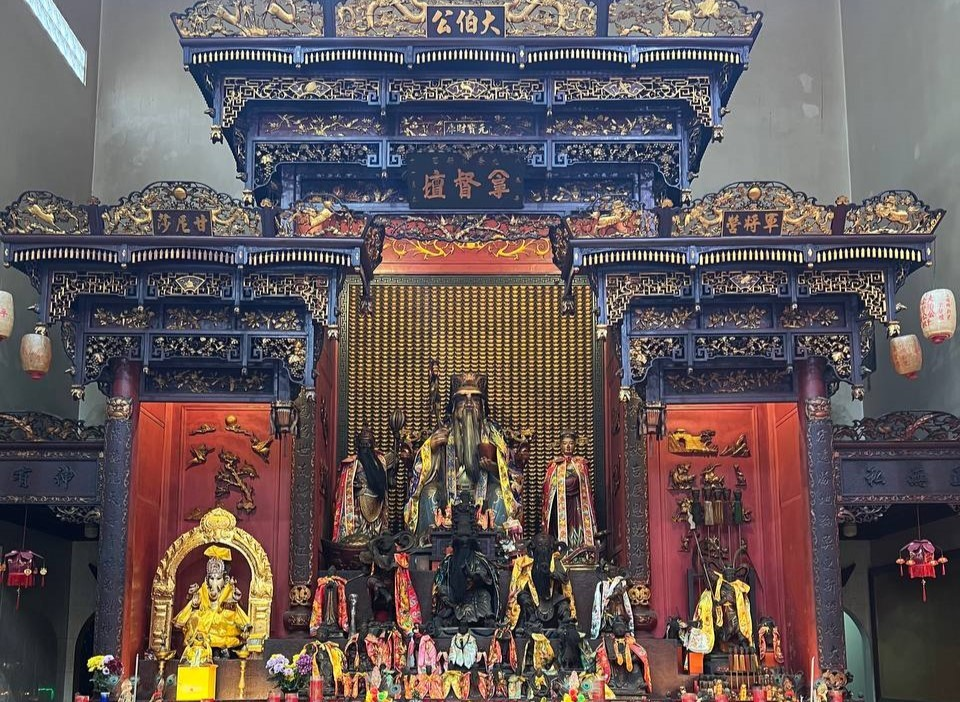

我们的故事
拿督坛建于1927年。1920年几户人家从远方来开辟丛林，把这黑暗的丛林点燃第一盏灯，称此地为 “德义村” 也称 “九条桥”。“德义村” 也称 “九条桥” 是因为村里共有九条大大小小的桥共村民使用。而 “新芭” 是指现在的罗弄泉至宏茂桥一道的地段，“老芭” 是从宏茂桥一道至淡甲路的地段。拿督公庙就刚好座落在 “新芭” 现今宏茂桥一道油站对面。
因为九条桥是多数人熟悉的地方，为了保留拿督公的历史，我们决定称拿督公庙为 ”九条桥新芭拿督坛“。
由于旧庙的地方小，为了庆祝拿督公及众神千秋，理事会决定把庆典设在宏茂桥组屋大牌306楼下，那也是本坛第一次在组屋区庆祝千秋。直到1984年政府征用土地，发展为碧山公园，本坛也搬迁到宏茂桥大牌307的组屋，继续为各界善信提供救世服务直到普宫。